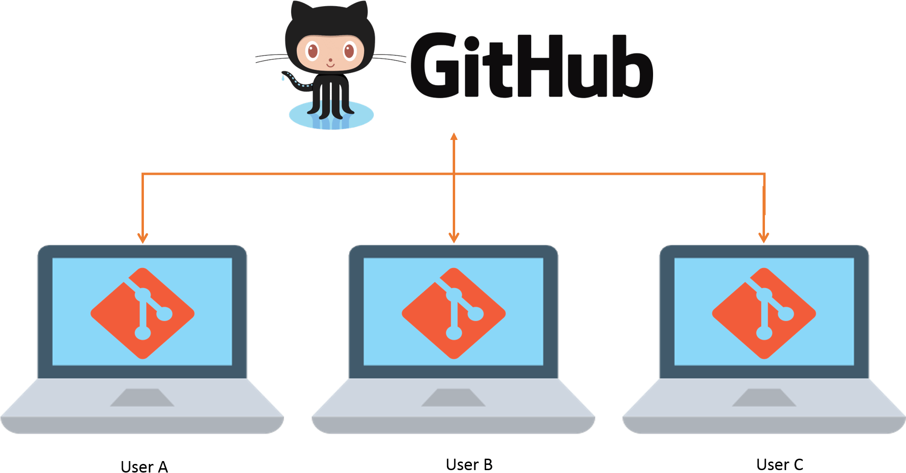

Git is a distributed version control system that lets multiple people work on a project simultaneously, keep a history of changes, and easily switch between different versions of the code.
The main goal of our Version Control project is to fully understand version control systems and share the knowledge we've gained.
Through this website, we present the topics we learned through hands-on experience, providing valuable insights for our visitors. During our project, we explored certain key topics and shared them on our website. You can find these topics and related content here.This guide explains how to open a project on GitHub, connect it to a local repository, and use the essential Git commands during the process. It also describes how people can contribute effectively to the project.
In our project, we used Git branches to manage different features and tasks separately. Branching allowed us to work simultaneously without interfering with each other's code, making collaboration easier and safer.
Monitoring changes allowed us to collaborate efficiently, fix errors promptly, and maintain a clear development history. Once our work on the develop branch was complete, we merged the changes back into the main branch to keep the project up to date.